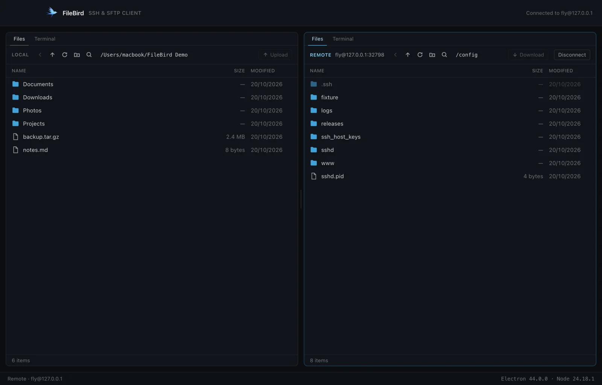
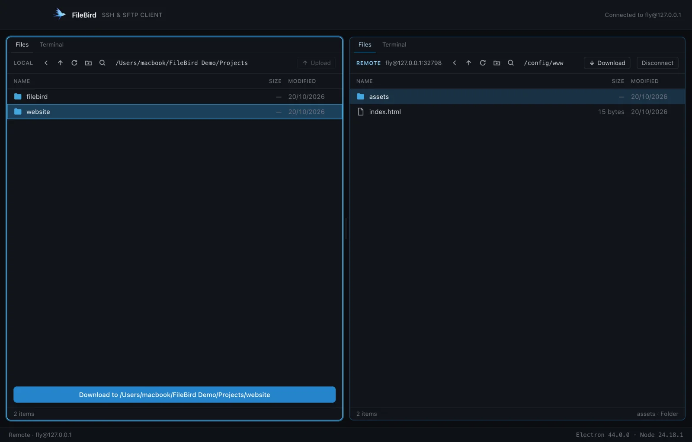
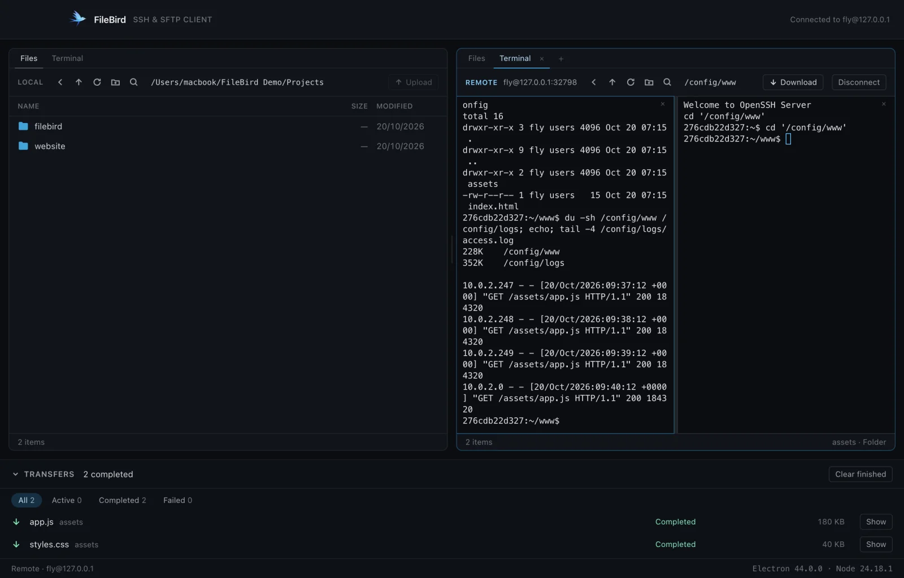
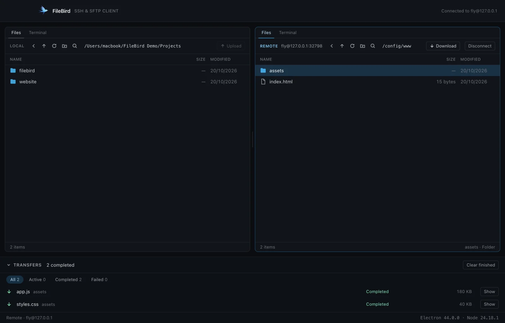

An SSH and SFTP client in one window.
Your computer on the left, your server on the right. Drag files between them, and run commands on the same connection without opening another app. For developers deploying a site, teams moving backups, anyone who has ever juggled an FTP client in one window and a terminal in another.

Both jobs, one window
It does the work of an SFTP client and a terminal at once, over the single SSH connection you have already made.
Two panes, side by side
Your computer and your server at the same time, each with its own history, selection and search.
Transfers that behave
Drag files across, or press a button. A queue moves them three at a time, with progress, speed, cancel and retry — and never leaves a half-written file behind.
Real terminals
A shell on the server over the connection you are already using — no second login, no second password — and shells on your own machine. Split them side by side or stacked.
Safe by default
Passwords go to your system keychain, never to a file. Every server's identity is checked on every connection. Deletes on your own machine go to the Trash.
Nothing phones home
No accounts, no telemetry, no update pings.
Drag, drop, and run commands without leaving the window
Three moments from the full fourteen-step tour.

Drag files between the panes
Drop on a folder row to go inside it, or anywhere else in the pane to use the folder on show. Dragging within the same pane moves items instead of copying.

Split the terminal
Watch a log in one shell, work in another. Splits can be split again, each with its own scrollback and starting folder.

A queue that never leaves a mess
Three files move at a time. Cancel one, retry a failed one — FileBird reconnects if the server dropped.
FileBird holds the keys to your servers, so it is built to deserve that
- Passwords and passphrases live only in your system keychain — never in a settings file, a log, or the part of the app that draws the screen.
- Every server's identity is verified on every connection, and a changed key stops the connection rather than warning you after the fact.
- Nothing is sent anywhere. No accounts, no telemetry, no update pings — the app only ever talks to the servers you tell it to.